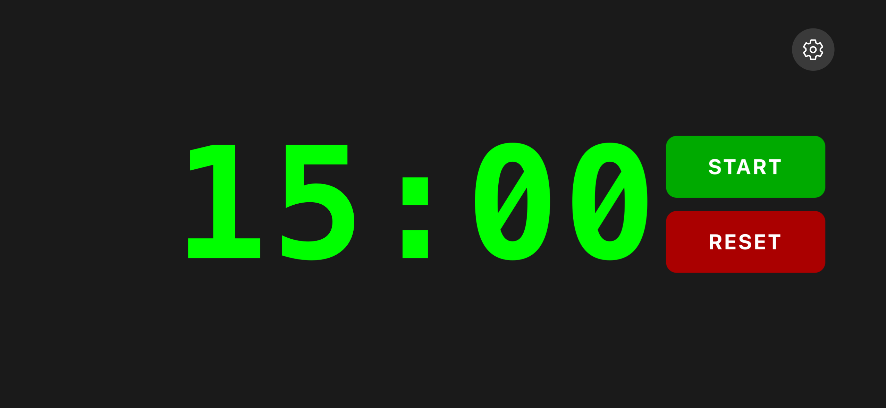
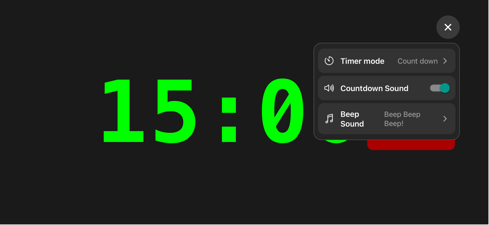
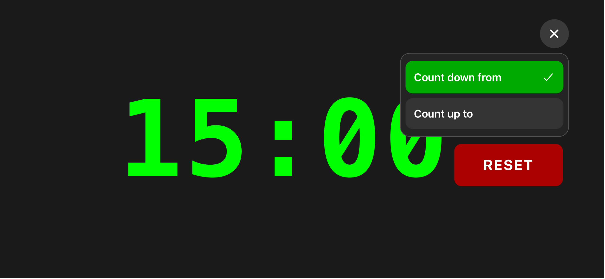

Actually see how much time you have left on a tiny screen.
Big Improv Timer is a bold, easy-to-read rehearsal timer designed for improv teams. Quickly see how much time you have left from across the room.
Use it right in your browser.

How the colors work
In either mode, Big Improv Timer changes color based on how close you are to the end of the set.
- Green – more than half of the set is left
- Orange/Yellow – less than half of the set is left
- Red – less than 10% of the set is left
- Done / past – countdown ends on "DONE"; count-up keeps going with "PAST TIME"
Count down or count up
Open the gear and pick the mode that fits your rehearsal. The label above the digits follows your choice.


- Count down from – watch time remaining until a pulsing "DONE"
- Count up to – start at 0:00 and run to your target; past the target it stays red and shows "PAST TIME"
Keyboard shortcuts
On the web, you can control the timer without touching your mouse.
- Space – start, pause, or resume
- R – reset
- E – edit the duration
- Escape – cancel edit